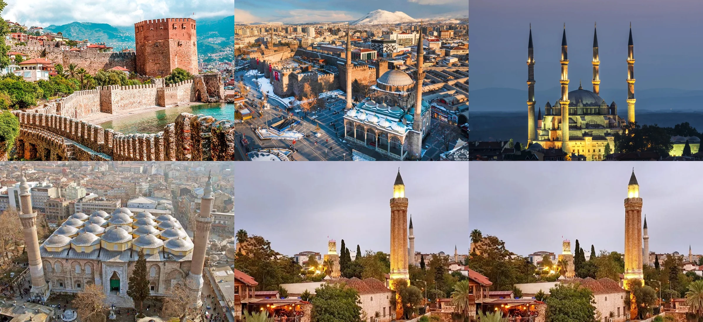
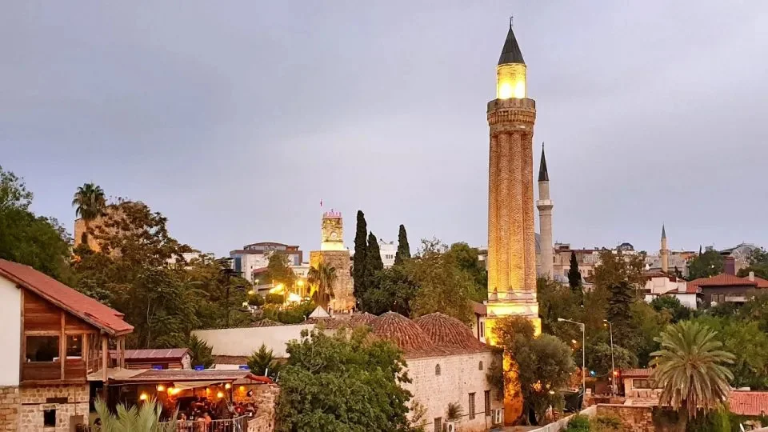
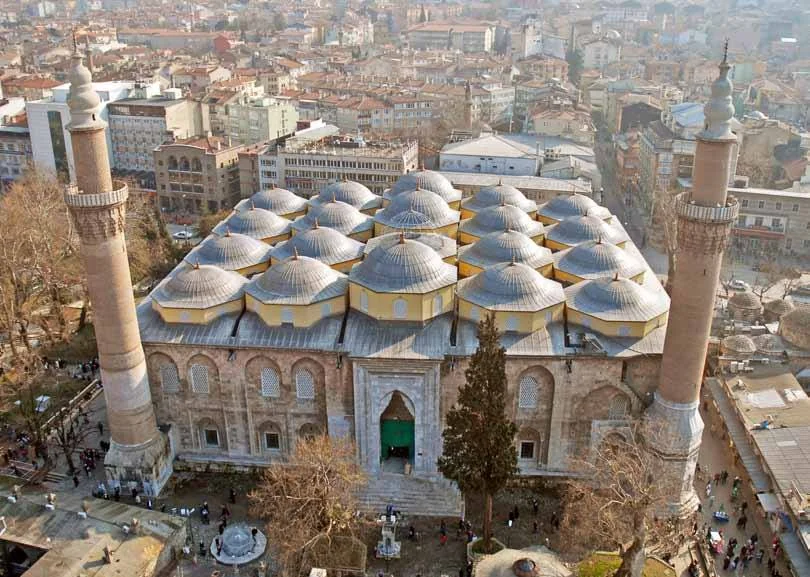
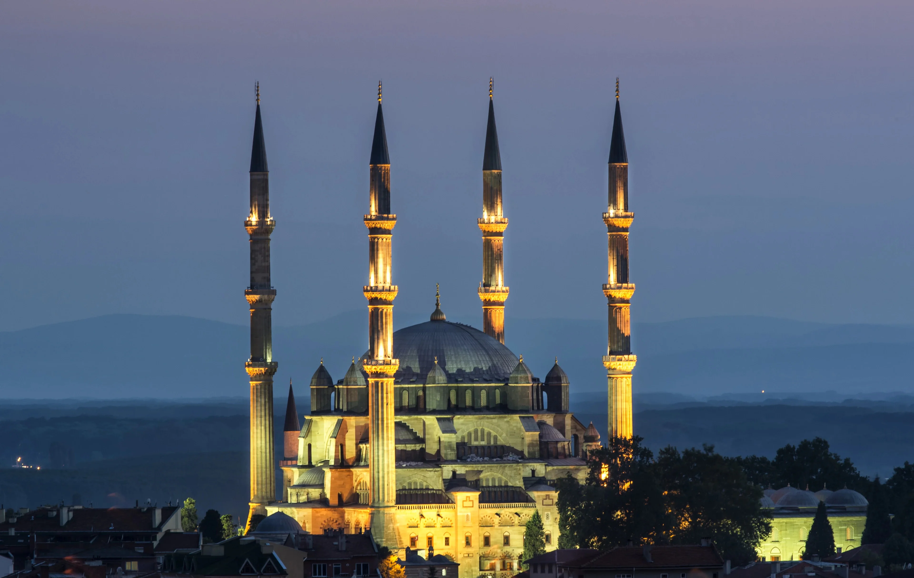
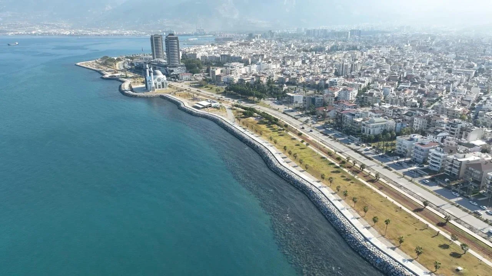
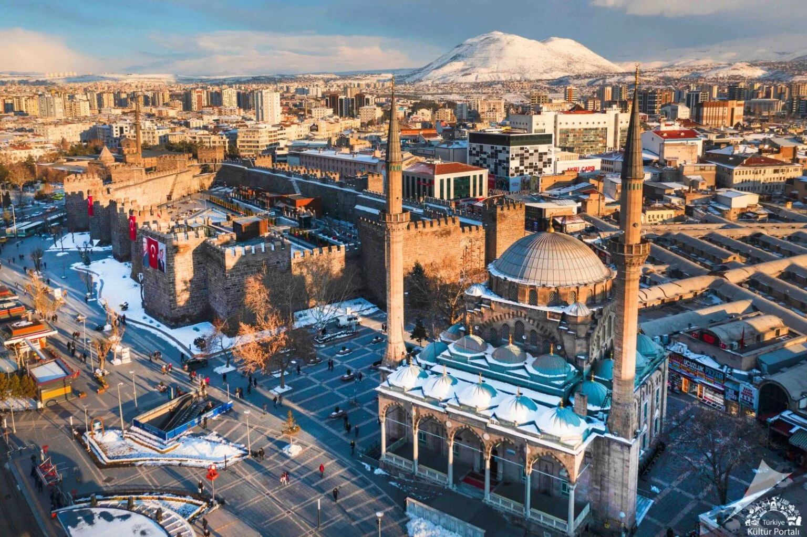
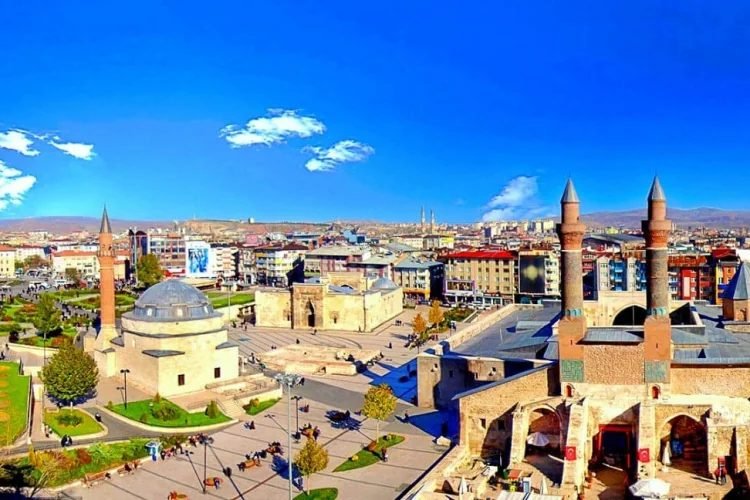
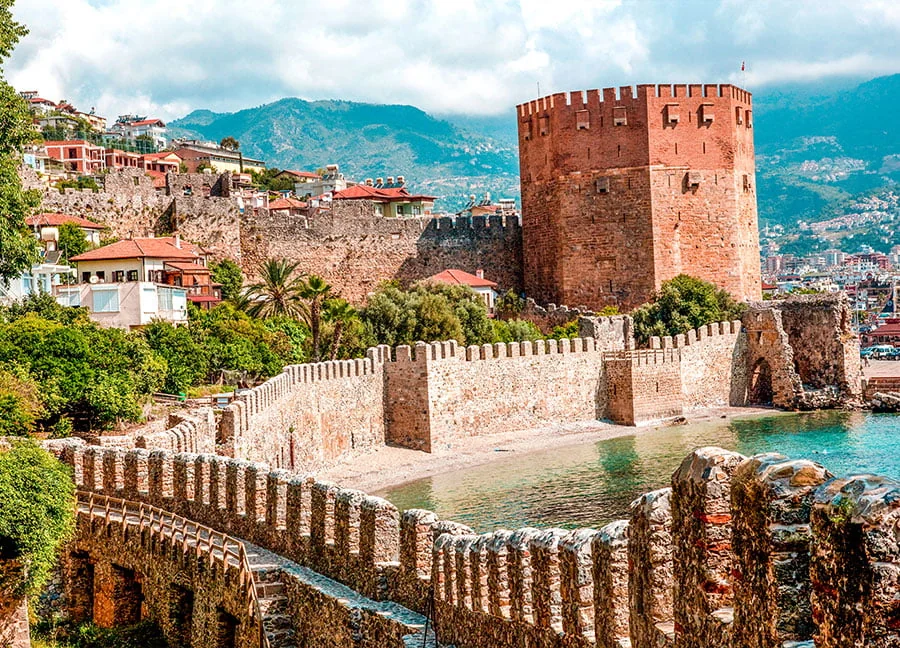

Her gün haritalarda gördüğümüz, tabelalarında okuduğumuz ve milyonlarca insanın yaşadığı şehirlerin isimleri çoğu zaman bize sıradan gelir. Antalya, Bursa, Edirne, Kayseri ya da Alanya gibi isimler artık günlük hayatın doğal bir parçası hâline gelmiştir. Ancak bu şehirlerin bazıları yalnızca coğrafi birer yer adı değildir. Aslında her biri, binlerce yıl önce yaşamış kralların, imparatorların ve sultanların günümüze ulaşan miraslarıdır.
Tarih boyunca hükümdarlar yalnızca ordular yönetmedi, savaşlar kazanmadı ya da saraylar inşa etmedi. Bazıları kendi isimlerini kurdukları şehirlere verdi, bazıları ise mevcut şehirleri yeniden şekillendirerek adlarını o topraklara kazıdı. Aradan yüzyıllar geçti, devletler yıkıldı, hanedanlar ortadan kalktı ve sınırlar değişti. Ancak hükümdarların isimleri yaşamaya devam etti. Bugün Anadolu'nun birçok şehrinde dolaşırken aslında farkında olmadan antik kralların, Roma imparatorlarının ve Selçuklu sultanlarının izlerini takip ediyoruz.
Bu durum özellikle Anadolu için oldukça dikkat çekicidir. Çünkü Anadolu, tarih boyunca Hititlerden Perslere, Helenistik krallıklardan Romalılara, Bizans'tan Selçuklulara ve Osmanlılara kadar sayısız medeniyete ev sahipliği yapmıştır. Her yeni dönem yalnızca siyasi yapıyı değil, şehirlerin kimliğini de değiştirmiştir. Bazı şehirler yeni hükümdarların onuruna yeniden adlandırılmış, bazıları ise kurucularının isimlerini yüzyıllar boyunca koruyarak günümüze ulaşmıştır.
Peki bugün kullandığımız şehir isimlerinin arkasında hangi hükümdarlar bulunuyor? Antalya gerçekten bir kralın adını mı taşıyor? Kayseri'nin Roma imparatorlarıyla nasıl bir bağlantısı var? Edirne'nin kökeninde hangi hükümdar yatıyor? Ve Alanya'nın adı neden bir Selçuklu sultanını hatırlatıyor?
Bu soruların cevapları, Anadolu'nun haritasına farklı gözle bakmamızı sağlayacak kadar ilginç.
Bir Şehrin Adı Nasıl Binlerce Yıl Yaşayabilir?
Bir şehrin ismi, çoğu zaman o yerleşimin kimliğinin en kalıcı parçasıdır. Saraylar yıkılabilir, surlar harabeye dönüşebilir, hanedanlar tarihin tozlu sayfalarına karışabilir. Ancak şehir isimleri bazen bütün bu değişimlere rağmen yaşamaya devam eder. Bu nedenle bir şehrin adını incelemek, çoğu zaman o şehrin tarihini incelemek kadar önemlidir.
Antik Çağ'da hükümdarlar için bir şehre kendi adını vermek yalnızca kişisel bir tercih değildi. Bu aynı zamanda siyasi bir güç gösterisiydi. Yeni kurulan bir şehir, onu kuran hükümdarın otoritesini temsil ediyor; fethedilen bir şehir ise yeni yönetimin sembolü hâline geliyordu. Bu yüzden krallar, imparatorlar ve komutanlar zaman zaman isimlerini yaşatmak amacıyla şehirleri yeniden adlandırıyordu.
Bu gelenek özellikle Helenistik Dönem'de oldukça yaygınlaştı. Büyük İskender'in fetihlerinden sonra kurulan birçok şehir onun adını taşıyordu. Benzer şekilde Helenistik krallar da kendi isimlerini yeni yerleşimlere vererek siyasi etkilerini kalıcı hâle getirmeye çalıştı. Roma döneminde ise bu gelenek farklı bir boyut kazandı. İmparatorların onuruna şehir isimleri değiştiriliyor, bazı yerleşimler hükümdar unvanlarıyla anılmaya başlanıyordu.
Anadolu, bu dönüşümlerin en yoğun yaşandığı coğrafyalardan biri oldu. Çünkü bölge yalnızca bir medeniyetin değil, birbirini takip eden çok sayıda devletin egemenliği altına girdi. Her yeni dönem, şehirlerin tarihinde yeni bir katman oluşturdu. Kimi zaman eski isimler tamamen unutuldu, kimi zaman ise yeni isimler yüzyıllar içinde değişerek bugünkü hâline ulaştı.
Bu nedenle bugün Antalya, Kayseri veya Edirne gibi isimleri kullandığımızda aslında yalnızca modern şehirlerden söz etmiyoruz. Aynı zamanda Bergama krallarının, Roma imparatorlarının ve Selçuklu sultanlarının bıraktığı mirası da farkında olmadan yaşatıyoruz.
Bu şehirlerin en dikkat çekici örneklerinden biri ise Akdeniz kıyısında bulunan Antalya'dır. Çünkü bugün milyonlarca turistin ziyaret ettiği bu şehrin adı, yaklaşık iki bin iki yüz yıl önce yaşamış bir Helenistik kralın adını taşımaktadır.
Antalya: Bergama Kralı II. Attalos'un Şehri

Bugün Türkiye'nin en önemli turizm merkezlerinden biri olan Antalya'nın adı, kökenini Helenistik Dönem'in güçlü hükümdarlarından biri olan Bergama Kralı II. Attalos'tan alır. Şehrin hikâyesi, MÖ 2. yüzyılda Anadolu'nun batısında hüküm süren Bergama Krallığı'na kadar uzanır.
Antik kaynaklara göre II. Attalos, Akdeniz kıyısında stratejik öneme sahip bir liman şehri kurmak istiyordu. Bu amaçla günümüzde Antalya Körfezi'nin bulunduğu bölgede yeni bir yerleşim oluşturuldu. Kurulan şehre hükümdarın adına ithafen Attaleia adı verildi. Bu isim doğrudan Attalos'tan türemişti ve şehrin kurucusunu yaşatmayı amaçlıyordu.
Attaleia kısa sürede bölgenin önemli limanlarından biri hâline geldi. Akdeniz ticaret yolları üzerinde bulunması, şehrin ekonomik ve stratejik değerini artırdı. Roma egemenliği döneminde de önemini koruyan şehir, Bizans döneminde varlığını sürdürdü ve farklı kültürlerin etkisi altında gelişmeye devam etti.
Yüzyıllar boyunca kullanılan Attaleia adı zamanla değişime uğradı. Dil değiştikçe ve farklı toplumlar bölgeye hâkim oldukça şehir adı da dönüşmeye başladı. Önce Adalia biçiminde kullanılmaya başlanan isim, zaman içinde bugünkü Antalya şekline evrildi.
Ancak ismin geçirdiği bütün değişimlere rağmen köken değişmedi. Bugün Antalya adıyla bildiğimiz şehir, hâlâ Bergama Kralı II. Attalos'un adını taşımaktadır. Aradan yaklaşık iki bin iki yüz yıl geçmiş olmasına rağmen bir Helenistik hükümdarın adı, milyonlarca insanın kullandığı modern bir şehir isminde yaşamaya devam etmektedir.
Antalya'nın hikâyesi etkileyici olsa da Anadolu'da hükümdar adını taşıyan tek şehir değildir. Marmara Bölgesi'nin en önemli şehirlerinden biri olan Bursa'nın adı da kökenini antik bir kraldan alır ve hikâyesi bizi bu kez Bithynia Krallığı'na götürür.
Bursa: Bithynia Kralı Prusias'ın Mirası

Bugün Osmanlı'nın ilk başkenti olarak tanınan Bursa'nın tarihi, sanıldığından çok daha eskiye uzanır. Şehrin adı yalnızca Osmanlı dönemine değil, Antik Çağ Anadolu'sunun güçlü krallıklarından biri olan Bithynia Krallığı'na kadar takip edilebilir.
Bursa'nın kökenindeki isim, Bithynia Kralı I. Prusias'a dayanır. MÖ 3. yüzyılın sonları ile MÖ 2. yüzyılın başlarında hüküm süren Prusias, bölgenin en etkili hükümdarlarından biri olarak kabul edilir. Antik kaynaklarda şehrin adı Prusa veya Prusa ad Olympum şeklinde geçer. Bu isim doğrudan kralın adına gönderme yapmaktadır.
Şehrin kuruluşuyla ilgili anlatılarda, Kartacalı ünlü komutan Hannibal'ın da adı geçer. Roma'ya karşı verdiği mücadeleyle tanınan Hannibal, sürgün yıllarında Bithynia Krallığı'na sığınmış ve bazı kaynaklara göre Prusa'nın gelişiminde rol oynamıştır. Her ne kadar tarihçiler bu konuda farklı görüşlere sahip olsa da, şehrin Prusias adıyla ilişkilendirildiği konusunda genel bir görüş birliği bulunmaktadır.
Roma döneminde şehir önemini korudu ve bölgenin önemli yerleşimlerinden biri hâline geldi. Bizans döneminde de kullanılan Prusa adı, yüzyıllar boyunca çeşitli telaffuz değişiklikleri geçirdi. Türklerin bölgeye yerleşmesinden sonra isim zamanla Bursa biçimine dönüştü ve günümüze kadar ulaştı.
Bugün Bursa denildiğinde çoğu insanın aklına Osmanlı sultanları gelir. Ancak şehrin adı, Osmanlı'dan yaklaşık bin beş yüz yıl önce yaşamış bir Bithynia kralının mirasını taşımaktadır. Bu durum Anadolu'daki şehir isimlerinin ne kadar derin tarihî katmanlara sahip olduğunu gösteren en çarpıcı örneklerden biridir.
Bursa'nın adı bir Anadolu kralından gelirken, Trakya'nın en önemli şehirlerinden biri olan Edirne ise adını Roma İmparatorluğu'nun en güçlü hükümdarlarından birinden almıştır.
Edirne: İmparator Hadrianus'un Adını Taşıyan Şehir

Türkiye'nin Avrupa'ya açılan kapısı olarak görülen Edirne, tarih boyunca stratejik öneme sahip bir yerleşim olmuştur. Ancak şehrin adı, Osmanlı döneminden çok daha eski bir geçmişe dayanır. Edirne'nin kökeninde Roma İmparatorluğu'nun en tanınmış hükümdarlarından biri olan Hadrianus bulunur.
MS 117 ile 138 yılları arasında hüküm süren Hadrianus, Roma tarihinin en etkili imparatorlarından biri olarak kabul edilir. İmparatorluk sınırlarını genişletmekten çok güçlendirmeyi tercih eden Hadrianus, imar faaliyetleri ve şehirleşme çalışmalarıyla tanınır. İngiltere'deki ünlü Hadrian Duvarı da onun döneminde inşa edilmiştir.
Roma döneminde bugünkü Edirne'nin bulunduğu yerleşim, imparatorun onuruna Hadrianopolis olarak adlandırıldı. Bu isim Yunanca ve Latince kaynaklarda "Hadrianus'un Şehri" anlamına gelmektedir. Şehir, Balkanlar ile Anadolu arasındaki geçiş noktalarından biri olması nedeniyle kısa sürede büyük önem kazandı.
Yüzyıllar boyunca Bizans egemenliği altında kalan Hadrianopolis, farklı dillerde çeşitli biçimlerde kullanılmaya devam etti. Zaman içinde Adrianople olarak anılan şehir, Türklerin bölgeye hâkim olmasının ardından isim değişimine uğradı ve bugünkü Edirne formuna dönüştü.
Edirne'nin tarihî önemi yalnızca adından kaynaklanmaz. Osmanlı Devleti'nin İstanbul'un fethinden önceki başkentlerinden biri olan şehir, yüzyıllar boyunca Balkanlar'ın en önemli merkezlerinden biri olarak kaldı. Buna rağmen şehrin isminde hâlâ Roma İmparatoru Hadrianus'un izi yaşamaya devam etmektedir.
Bir Roma imparatorunun adıyla anılan Edirne'nin ardından sırada, adını dünya tarihinin en ünlü komutanlarından birine bağlayan bir şehir bulunuyor: İskenderun.
İskenderun: Büyük İskender'in Gölgesindeki Şehir

Tarih boyunca çok az hükümdar, Büyük İskender kadar kalıcı bir miras bırakmıştır. Makedonya'dan başlayarak Yunanistan, Anadolu, Mısır, Mezopotamya ve Hindistan'a kadar uzanan fetihleriyle dünyanın en büyük imparatorluklarından birini kuran İskender, yalnızca savaş meydanlarında değil, haritalar üzerinde de iz bırakmıştır.
Onun adıyla ilişkilendirilen şehirlerden biri de bugün Hatay sınırları içinde bulunan İskenderun'dur.
Antik kaynaklarda şehir Alexandretta adıyla anılır. Bu isim, doğrudan İskender'in adından türemiştir ve "Küçük İskenderiye" anlamına gelir. Şehrin kuruluşuyla ilgili ayrıntılar konusunda tarihçiler arasında farklı görüşler bulunsa da, yerleşimin Büyük İskender'in bölgedeki seferleriyle ve onun ardından oluşan Helenistik düzenle yakından bağlantılı olduğu konusunda genel bir uzlaşı vardır.
İskender'in MÖ 333 yılında Pers Kralı III. Darius'u mağlup ettiği Issos Muharebesi de bu bölgeye oldukça yakın bir alanda gerçekleşmiştir. Bu nedenle İskender'in adı, yalnızca bir şehir isminde değil, bölgenin tarihî hafızasında da önemli bir yer edinmiştir.
Helenistik dönemden Roma ve Bizans dönemlerine kadar önemini koruyan şehir, özellikle liman özelliği sayesinde ticaret açısından büyük değer taşıyordu. Osmanlı döneminde de kullanılan yerleşim, zaman içinde Alexandretta'dan İskenderun'a dönüşen ismiyle günümüze ulaştı.
Bugün İskenderun adı her kullanıldığında, aslında dünya tarihinin en ünlü hükümdarlarından biri olan Büyük İskender'in mirası da hatırlatılmış olur. Ancak Anadolu'da yalnızca kralların ve komutanların değil, Roma imparatorlarının unvanlarının yaşadığı şehirler de vardır. Bunun en dikkat çekici örneklerinden biri ise Kayseri'dir.
Kayseri: Bir İmparatorun Adını Taşıyan Şehir

Bugün İç Anadolu'nun en büyük şehirlerinden biri olan Kayseri'nin adı, ilk bakışta Türkçe kökenli gibi görünebilir. Ancak şehrin ismi aslında Roma İmparatorluğu'nun en güçlü hükümdarlarından biriyle bağlantılıdır. Bu nedenle Kayseri, Anadolu'da hükümdar adını taşıyan şehirler arasında belki de en ilginç örneklerden biridir.
Şehrin bilinen en eski adlarından biri Mazaka'dır. Kapadokya Krallığı'nın önemli merkezlerinden biri olan bu yerleşim, uzun süre bu isimle anılmıştır. Daha sonra Kapadokya Kralı Ariarathes döneminde Eusebia adı kullanılmaya başlanmıştır. Ancak şehrin kaderini değiştiren asıl gelişme Roma İmparatorluğu'nun bölgedeki etkisinin artmasıyla yaşandı.
MÖ 27 yılında Roma İmparatoru Augustus iktidara geldiğinde, onun onuruna birçok şehirde çeşitli isim değişiklikleri yapıldı. Kapadokya'nın önemli merkezi olan bu şehir de imparatorluk ailesine duyulan bağlılığın göstergesi olarak Caesarea adını aldı. Bu isim doğrudan "Caesar" unvanından geliyordu.
Burada önemli bir ayrıntı vardır. Caesar başlangıçta Julius Caesar'ın aile adıydı. Ancak zamanla Roma hükümdarlarının kullandığı bir imparatorluk unvanına dönüştü. Augustus da bu unvanın mirasçısıydı. Böylece Caesarea adı yalnızca belirli bir kişiyi değil, Roma imparatorluk otoritesini temsil eden bir isim hâline geldi.
Yüzyıllar boyunca kullanılan Caesarea adı, farklı dillerin etkisiyle çeşitli değişimler geçirdi. Bizans döneminde Kaisareia olarak telaffuz edilen isim, Türklerin Anadolu'ya yerleşmesinin ardından Kayseri biçimine dönüştü. Bugün kullandığımız şehir adı, yaklaşık iki bin yıl önceki Roma dünyasından günümüze ulaşan bir miras niteliğindedir.
Kayseri'nin hikâyesi, bir hükümdar unvanının nasıl bir şehir adına dönüşebildiğini gösteren etkileyici bir örnektir. Ancak Anadolu'da bu durumun tek örneği değildir. Sivas'ın eski adı da yine Roma imparatorluk geleneğiyle doğrudan bağlantılıdır.
Sivas: Bir İmparatorluk Unvanının İzleri

Sivas'ın adının kökeni ilk bakışta diğer şehirlerden biraz farklı görünür. Çünkü burada karşımıza doğrudan bir hükümdar adı değil, bir hükümdarlık unvanı çıkar. Ancak bu unvanın kökeni Roma İmparatoru Augustus'a kadar uzandığı için şehir yine aynı tarihî geleneğin parçası kabul edilir.
Antik dönemde şehrin adı Sebasteia olarak bilinirdi. Bu isim Yunanca Sebastos kelimesinden türemiştir. Sebastos ise Roma dünyasında Augustus unvanının Yunanca karşılığı olarak kullanılıyordu. Başka bir ifadeyle Sebasteia, "Augustus'un şehri" ya da "Augustus'a adanmış şehir" anlamı taşıyan bir isimdi.
Augustus, Roma İmparatorluğu'nun ilk imparatoru olarak tarihte son derece önemli bir yere sahiptir. Onun döneminde Roma yalnızca büyük bir askerî güç değil, aynı zamanda güçlü bir idari sistem hâline geldi. Bu nedenle Augustus'un adı ve unvanları, imparatorluğun farklı bölgelerinde saygı göstergesi olarak kullanılmaya başlandı.
Sebasteia da bu uygulamanın Anadolu'daki örneklerinden biridir. Şehir yüzyıllar boyunca bu isimle anıldı ve Roma ile Bizans dönemlerinde bölgenin önemli merkezlerinden biri olarak varlığını sürdürdü. Zaman içinde Sebasteia adı farklı telaffuzlar ve dil değişimleri sonucunda bugünkü Sivas biçimine dönüştü.
Bu hikâye bize şehir isimlerinin her zaman doğrudan bir kişinin adından gelmediğini de gösterir. Bazen bir hükümdarın unvanı, bazen de onun temsil ettiği siyasi otorite şehirlerin kimliğine dönüşebiliyordu. Sivas bu açıdan Anadolu'daki en ilginç örneklerden biridir.
Ancak listemizde yer alan şehirler arasında bir tanesi diğerlerinden farklı bir döneme aittir. Çünkü şimdiye kadar Helenistik krallar, Roma imparatorları ve antik hükümdarlardan söz ettik. Sıradaki şehir ise adını bir Selçuklu sultanından alır ve bizi Orta Çağ Anadolu'suna götürür.
Alanya: Bir Selçuklu Sultanının Adını Yaşatan Şehir

Türkiye'nin en önemli turizm merkezlerinden biri olan Alanya'nın adı, diğer örneklerden farklı olarak Antik Çağ'a değil, Anadolu Selçuklu Devleti dönemine uzanır. Bu yönüyle Alanya, listemizde yer alan şehirler arasında Türk tarihine bağlanan en güçlü örneklerden biridir.
Şehrin bilinen eski adlarından biri Kalonoros'tur. Bu isim Bizans döneminde kullanılmış ve "güzel dağ" anlamına geldiği düşünülmüştür. Akdeniz'e hâkim konumu ve doğal savunma avantajları nedeniyle şehir tarih boyunca stratejik önem taşımıştır.
13. yüzyılın ilk yarısında Anadolu Selçuklu Sultanı I. Alaeddin Keykubad bölgeyi ele geçirdi. Akdeniz ticareti açısından büyük önem taşıyan bu liman şehri, sultanın dikkatini çekmişti. Fetih sonrasında şehir yalnızca askerî açıdan güçlendirilmedi; aynı zamanda büyük imar faaliyetlerine sahne oldu. Bugün Alanya'nın simgeleri arasında yer alan birçok tarihî yapı da bu dönemde inşa edildi.
Sultan Alaeddin Keykubad'ın şehre verdiği önem nedeniyle yerleşimin adı Alaiye olarak değiştirildi. Bu isim doğrudan hükümdarın adıyla bağlantılıydı ve onun bölge üzerindeki hâkimiyetini simgeliyordu. Yüzyıllar boyunca kullanılan Alaiye adı, Cumhuriyet döneminde yapılan dil düzenlemeleri sonucunda bugünkü Alanya biçimine dönüştü.
Böylece I. Alaeddin Keykubad'ın adı, tıpkı Attalos, Prusias veya Hadrianus gibi yaşadığı dönemin çok ötesine taşındı. Bugün milyonlarca turistin ziyaret ettiği Alanya, adında hâlâ Selçuklu sultanının mirasını taşımaktadır.
Bu şehirlerin hikâyeleri ilk bakışta birbirinden bağımsız gibi görünse de aslında ortak bir noktaları vardır. Hepsi, Anadolu'nun binlerce yıllık tarihinin farklı dönemlerini günümüze taşıyan canlı hatıralardır.
Anadolu'nun Haritasında Yaşamaya Devam Eden Hükümdarlar
Tarih kitaplarında okuduğumuz hükümdarlar çoğu zaman geçmişte kalmış insanlar gibi görünür. Büyük İskender'in orduları artık yürümüyor, Hadrianus Roma İmparatorluğu'nu yönetmiyor, Prusias'ın krallığı yüzyıllar önce ortadan kalktı ve Alaeddin Keykubad'ın hüküm sürdüğü Selçuklu Devleti artık tarih sahnesinde yer almıyor. Buna rağmen bu hükümdarların bazıları, farkında olmadan her gün kullandığımız şehir isimlerinde yaşamaya devam ediyor.
Antalya'nın adında Attalos'un, Bursa'nın adında Prusias'ın, Edirne'nin adında Hadrianus'un, İskenderun'un adında Büyük İskender'in, Kayseri'nin adında Roma imparatorlarının kullandığı Caesar unvanının, Sivas'ın adında Augustus'un ve Alanya'nın adında Alaeddin Keykubad'ın izleri bulunuyor. Bu isimler yalnızca birer tarihî tesadüf değildir. Her biri Anadolu'nun farklı dönemlerde yaşadığı siyasi ve kültürel dönüşümlerin günümüze ulaşan canlı kalıntılarıdır.
Şehirler zaman içinde büyüyebilir, küçülebilir ya da tamamen değişebilir. Ancak isimler bazen bütün bu değişimlerden daha uzun ömürlü olur. Bir hükümdarın yaptırdığı saray yıkılabilir, heykelleri kaybolabilir veya krallığı tarihe karışabilir. Fakat adı bir şehre verilmişse, o isim yüzyıllar boyunca yaşamaya devam edebilir.
Bu nedenle şehir isimleri yalnızca coğrafi birer tanımlama değildir. Aynı zamanda geçmişten günümüze ulaşan tarihî belgelerdir. Bir şehir tabelasında gördüğümüz tek bir kelime bile bizi Helenistik krallıklardan Roma İmparatorluğu'na, Bizans'tan Selçuklulara kadar uzanan uzun bir tarih yolculuğuna çıkarabilir.
Bugün Antalya, Bursa, Edirne, Kayseri, Sivas, İskenderun ve Alanya'da yaşayan milyonlarca insan, belki de farkında olmadan binlerce yıl önce yaşamış hükümdarların isimlerini her gün kullanıyor. Anadolu'nun haritası bu yönüyle yalnızca şehirleri değil, geçmişin hükümdarlarını da taşımaya devam ediyor.
Sık Sorulan Sorular
Antalya ismi gerçekten bir hükümdardan mı geliyor?
Evet. Antalya'nın antik adı Attaleia'dır ve bu isim Bergama Kralı II. Attalos'tan gelmektedir. Şehir, Helenistik dönemde onun adına kurulmuştur.
Bursa adını hangi hükümdardan almıştır?
Bursa'nın kökenindeki isim, Bithynia Kralı I. Prusias'a dayanır. Antik kaynaklarda şehir Prusa olarak geçmektedir.
Edirne'nin eski adı neydi?
Edirne'nin Roma dönemindeki adı Hadrianopolis'ti. Bu isim Roma İmparatoru Hadrianus'un adına ithafen verilmiştir.
İskenderun gerçekten Büyük İskender'in adını mı taşır?
Evet. Şehrin antik adı Alexandretta'dır ve Büyük İskender'in adıyla ilişkilendirilir. Bu nedenle İskenderun, onun mirasını taşıyan şehirlerden biri olarak kabul edilir.
Kayseri isminin Caesar ile bağlantısı var mı?
Evet. Şehrin antik adı Caesarea'dır. Bu isim Roma imparatorlarının kullandığı Caesar unvanından gelmektedir ve zamanla Kayseri biçimine dönüşmüştür.
Sivas adının kökeni nedir?
Sivas'ın eski adı Sebasteia'dır. Sebastos kelimesi, Augustus unvanının Yunanca karşılığıdır. Bu nedenle şehir adı dolaylı olarak Roma İmparatoru Augustus ile bağlantılıdır.
Alanya'nın eski adı neydi?
Şehrin eski adı Kalonoros'tur. Anadolu Selçuklu Sultanı I. Alaeddin Keykubad'ın fethinden sonra Alaiye adı kullanılmaya başlanmış, zamanla bu isim Alanya'ya dönüşmüştür.
Türkiye'de hükümdar adını taşıyan başka şehirler var mı?
Evet. Anadolu'da farklı dönemlerde hükümdarlar, komutanlar ve imparatorlar adına kurulmuş veya yeniden adlandırılmış başka yerleşimler de bulunmaktadır. Ancak Antalya, Bursa, Edirne, İskenderun, Kayseri, Sivas ve Alanya bu konuda en bilinen örnekler arasındadır.
Kaynakça
- Bean, George E. Turkey Beyond the Maeander. John Murray Publishers.
- Bryce, Trevor. The World of The Neo-Hittite Kingdoms. Oxford University Press.
- Magie, David. Roman Rule in Asia Minor. Princeton University Press.
- Mitchell, Stephen. Anatolia: Land, Men and Gods in Asia Minor. Oxford University Press.
- Ramsay, William Mitchell. The Historical Geography of Asia Minor. Cambridge University Press.
- Talbert, Richard J. A. Barrington Atlas of the Greek and Roman World. Princeton University Press.
- Texier, Charles. Asia Minor: Description Géographique, Historique et Archéologique des Provinces et des Villes de la Chersonnèse d'Asie.
- Foss, Clive. Cities, Fortresses and Villages of Byzantine Asia Minor. Ashgate Publishing.
- Oxford Classical Dictionary. Oxford University Press.
- Encyclopaedia Britannica – Attalus II, Hadrian, Alexander the Great, Augustus ve Prusias maddeleri.
- Türkiye Kültür Portalı.
- Türk Tarih Kurumu Yayınları.
- İslam Ansiklopedisi (TDV) – Alaiye, Kayseri, Sivas, Edirne ve Antalya maddeleri.